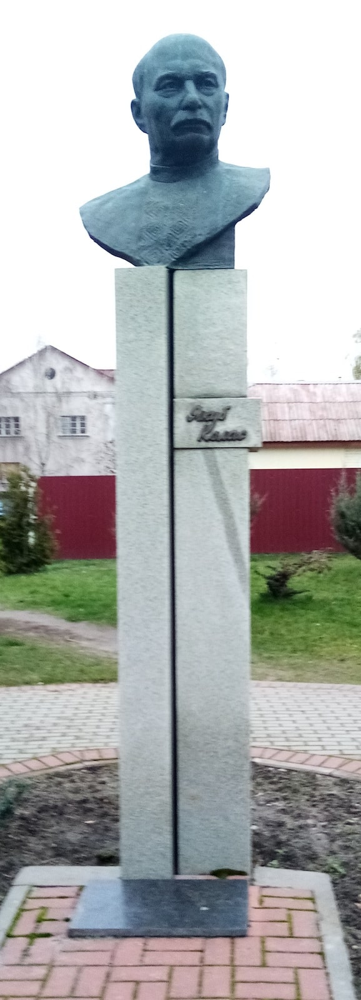

Якуб Колас

Памятник белорусскому писателю Якубу Коласу был возведен в 2005 году. В ноябре 1911 г. Я. Колос приезжает в наш город. Поселяется в доме своего товарища. Филиппович (товарищ Якуба Коласа) уступает ему часть своих уроков в местном региональном училище, кроме того он учит детей железнодорожников. Именно в Лунинце Я. Колас написал много стихотворений, рассказов, позже героями которых стали наши жители. Здесь он начал писать поэму «Сымон-Музыка». Над этим произведением он работал на протяжении 15 лет.